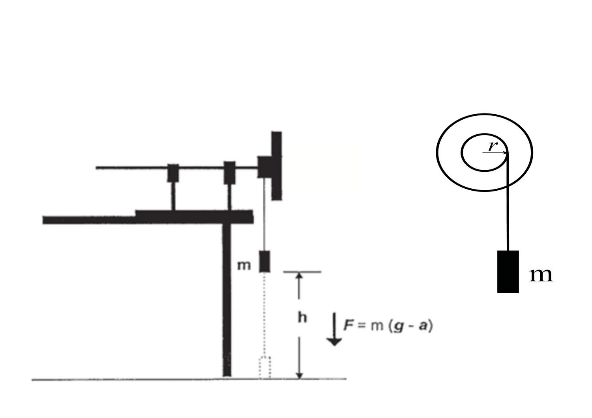
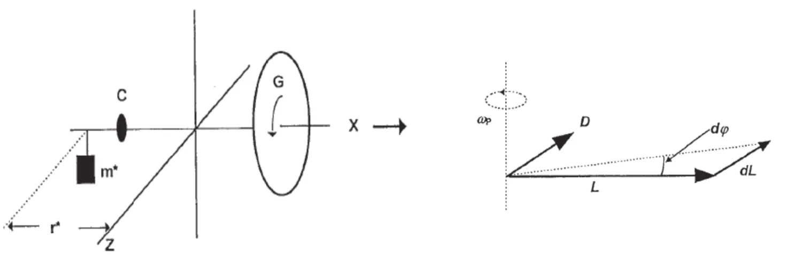
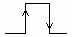

El Giróscopo
Objetivo
En esta práctica estudiaremos las características del movimiento de un giróscopo. Comenzaremos calculando el momento de inercia del giróscopo respecto de su eje longitudinal. Para ello se estudiará la aceleración angular generada por torques o momentos de fuerzas conocidas. Posteriormente, permitiremos el movimiento del giróscopo con sus tres ejes libres. En este apartado observaremos el movimiento de precesión del giróscopo y podremos relacionar la frecuencia de precesión con la frecuencia de giro del giróscopo.
Fundamento teórico y montaje experimental

Figura 6.1: Izq. Montaje experimental para la determinación del momento de inercia del giróscopo. Drcha. Visión frontal del montaje, en ella se indica el radio del tambor asociado al eje de rotación del giróscopo y del cual cuelga la masa m.
Supongamos que tenemos un giróscopo al cual únicamente le permitimos rotar respecto de su eje longitudinal. Si sobre el giróscopo actúa una fuerza capaz de generarle una aceleración angular, se observará como el giróscopo comenzará a girar en torno al eje de giro. En nuestro caso la fuerza será generada por una masa m conectada mediante un hilo de masa despreciable a un tambor de radio r asociado al eje del giróscopo. Esta masa la dejaremos caer libremente (Figura 6.1), aplicando la ecuación de la rotación de un sólido rígido podremos deducir la siguiente relación:
dtdωR=α=IpM(6.1)
donde ωR es la velocidad angular del sistema, α es la aceleración angular, Ip el momento de inercia del giróscopo respecto de su eje longitudinal y M el módulo del momento generado por el peso mg (M=F⋅r=mgr).
Si tenemos en cuenta el principio de acción-reacción, la fuerza que genera el torque sobre el giróscopo vendrá dada por la siguiente relación:
F=m⋅(g−a)(6.2)
siendo g el valor de la gravedad terrestre y a la aceleración de la partícula en su movimiento de caída.
Los valores de estas dos variables las podemos deducir a partir de las características del problema, de modo que:
a=tF22h,α=ra(6.3)
donde h es la altura desde la que dejamos caer la masa m, tF es tiempo que tarda en caer y r es el radio del tambor conectado al giróscopo al que hemos atado la masa.
Sustituyendo las ecuaciones 6.2 y 6.3 en 6.1 obtenemos:
tF2=mgr22Ip+2mr2h(6.4)
Con lo que tenemos una relación directa entre el momento de inercia del giróscopo y el tiempo de caída de la masa.
Hasta ahora, únicamente hemos permitido que nuestro giróscopo rotase respecto su eje longitudinal, sin embargo, podemos permitir que el giróscopo rote entorno a cualquiera de sus tres ejes principales de rotación.
De este modo, supongamos que nuestro giróscopo se encuentra en su posición horizontal y en equilibrio, para lo cual deberemos colocar un contrapeso C. Si el giróscopo gira entorno a su longitudinal (eje X) con una velocidad angular ωR, su momento angular L vendrá dado por:
L=Ip⋅ωR(6.5)
Si a continuación situamos una masa suplementaria m∗ en el eje X de nuestro giróscopo a una distancia r∗ del soporte tal y como se muestra en la figura 6.2, dicha masa generará un momento o torque suplementario M∗ que será igual a la variación temporal del momento angular.
M∗=m∗⋅g⋅r∗=dtdL(6.6)
Debido a la acción de este torque suplemetario, que en este caso actúa de forma perpendicular, transcurrido un tiempo dt el momento angular L habrá rotado un ángulo dφ desde su posición inicial (fig 6.2).

Figura 6.2: Montaje experimental y explicación del movimiento de precesión del giróscopo.
dL=L⋅dφ(6.7)
Para no venirse abajo por la acción del torque suplementario el giróscopo reaccionará de forma perpendicular a la fuerza generada por el torque, de modo que comenzará a describir un movimiento de precesión entorno al eje Y cuya velocidad angular ωP vendrá determinada por:
ωP=dtdφ=LdtdL=IP⋅ωR⋅dtdL=IP⋅ωRm∗⋅g⋅r∗(6.8)
Finalmente, si tomamos
ωP=tP2π,ωR=tR2π(6.9)
obtenemos:
tR1=4π2m∗⋅g⋅r∗IP1tP(6.10)
Cuando el eje de rotación es ligeramente desviado, el giróscopo presenta el fenómeno de nutación. Se puede comprobar que la velocidad angular de nutación es directamente proporcional a la velocidad angular de rotación.
ωN=CωRtR=CtN(6.11)
Resultados
Mida las dimensiones físicas del giróscopo (radio R y anchura d).
R(±ϵR)=
d(±ϵd)=
En esta primera parte, vamos a estudiar un método para obtener el momento de inercia del giróscopo. Para ello lo primero que debemos hacer es fijar el giróscopo de modo que únicamente pueda rotar en torno a su eje longitudinal. A continuación colgaremos una masa m de un hilo que previamente habremos enrrollado en torno al tambor fijado al eje de rotación del giróscopo. Si medimos el tiempo durante el cual el momento generado por el peso actúa sobre el giróscopo podremos deducir con ayuda de la ecuación 6.4 el momento de inercia del giróscopo.
- Medir el radio r del tambor asociado al giróscopo y sobre el cual se aplica la fuerza.
r(±ϵr)=
- Para 8 alturas h distintas y con ayuda de un cronómetro manual el alumno medirá el tiempo que tarda una masa m1=70g en llegar al suelo. Repetir tres veces cada medida.
| h(±ϵh) | t1, t2, t3 (±ϵt) | t | ±ϵt | t2 | ±ϵt2 |
| | | | | | | |
| | | | | | | |
| | | | | | | |
| | | | | | | |
| | | | | | | |
| | | | | | | |
| | | | | | | |
| | | | | | | |
- Representar gráficamente t2 en función de h. Calcular la pendiente a1, la ordenada en el origen b1 y el coeficiente de correlación lineal r1 de la recta de mı́nimos cuadrados t2=a1h+b1, y trazar esta recta sobre la representación anterior.
a1(±ϵa1)=b1(±ϵb1)=r1=
- A partir de los valores del apartado anterior y utilizando la ecuación 6.4 calcule el valor del momento de inercia del giróscopo.
Iz1(±ϵIz1)=
Estudio del movimiento de precesión y nutación del giróscopo
- Antes de comenzar este apartado el alumno deberá llamar al profesor para que le comente el proceso de medida.
- Libere el giróscopo, de modo que pueda moverse en cualquiera de sus tres ejes. A continuación, con ayuda de la pesa situada como contrapeso, equilibre el sistema de modo que inicialmente el giróscopo permanezca horizontal.
- Una vez que el sistema está equilibrado el alumno tirará de una cuerda previamente enrollada en el tambor del giróscopo, de modo que este comenzará a girar. A continuación,
- Con una puerta fotoeléctrica en posición

, medir el período de rotación del disco, tR1.
- Rápidamente, colgar el portapesas con una masa total de m=70g en el extremo del eje y con un cronómetro medir el tiempo tP que tarda el giróscopo en completar una vuelta.
- Deterner el giróscopo en su movimiento de precesión y medir el período de rotación del disco una vez ha completado la vuelta, tR2.
- Volver de nuevo al punto 1 y medir hasta tener al menos 8 valores. No es necesario parar la rotación del disco ni quitar la pesa en cada medición. Ya que el giróscopo se ha frenado debido a la fricción, la nueva medida será equivalente a si se hubiera tirado con un poco menos de fuerza.
- Finalmente, mida la distancia r∗(±ϵr∗)= desde el eje de giro a la parte trasera donde se sitúa el portapesas.
tR1 (±ϵtR1) | tR2 (±ϵtR2) | tR | ±ϵtR | tP (±ϵtP) |
| | | | |
| | | | |
| | | | |
| | | | |
| | | | |
| | | | |
| | | | |
| | | | |
- Representar gráficamente tR−1 en función de tP. Calcular la pendiente a, la ordenada en el origen b y el coeficiente de correlación lineal r de la recta de mı́nimos cuadrados tR−1=atP+b, y trazar esta recta sobre la representación anterior.
a(±ϵa)=b(±ϵb)=r=
- Haciendo uso de los resultados obtenidos y comparando con la ecuación 6.10, determine el momento de inercia del plato giratorio.
Iz2(±ϵIz2)=